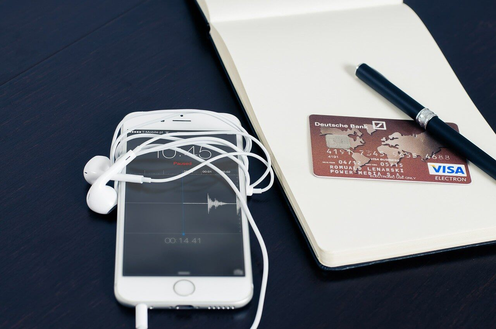

Avantaje si Dezavantaje
Avantaje
1. Cu un smartphone puteti citi stirile, puteti juca jocuri, puteti asculta muzica sau puteti viziona un film.
2. Recenziile despre produse si servicii sunt mai usor de facut atunci cand le puteti face prin Twitter si Facebook de pe un smartphone. Multe companii utilizeaza acum media sociala ca parte a serviciului lor pentru clienti.
3.Cu un smartphone, este mult mai simplu sa va verificati e-mailurile sau chiar contul bancar in timp ce va deplasati.
4. Cu atatea hotspot-uri publice, smartphone-urile va permit sa reduceti dependenta de reteaua telefonului pentru a va conecta. Acest lucru inseamna ca puteti naviga pe Internet mai mult fara a fi nevoie sa consumati din datele voastre mobile.
5. Telefoanele inteligente sunt excelente pentru soferi. Puteti utiliza aplicatiile smartphone, cum ar fi Google Maps, care va ajuta sa ajungeti la destinatie si sa evitati blocajele de trafic.
6. Smartphone-urile pot fi instrumentul ideal pentru a gasi concertul sau restaurantul perfect. Folosind aplicatiile telefonului precum, puteti obtine informatii despre unde sa mergeti si ce sa faceti – toate bazate pe locatia curenta.
7. Deoarece un smartphone este in esenta un computer cu ecran mic, inseamna ca puteti efectua o gama larga de activitati atunci cand va deplasati, de exemplu, puteti utiliza telefonul pentru a va comanda lucruri, puteti scrie un raport sau puteti porni incalzirea centrala de acasa.

Dezavantaje
1. Telefoanele pot genera cheltuieli mari si va pot izola de lumea reala. Ar trebui sa evitati sa fiti obsedat de verificarea constanta a acestuia.
2. Exista anumite situatii sociale in care nu este acceptabil sa ai un telefon. De exemplu, nu este considerat politicos sa intrerupeti o conversatie pentru a verifica un text primit, iar multi oameni nu considera ca este potrivit sa luati un telefon la masa.
3. Telefoanele inteligente sunt scumpe. In plus, exista costuri pentru diferite servicii si taxe pentru achizitionarea de aplicatii.
4. De asemenea, exista riscuri de securitate cu telefoanele smartphone. Veti stoca o multime de informatii personale iar multe dintre aplicatii va vor conecta automat, oferind oricui acces la conturile voastre online. Daca telefonul nu are o protectie adecvata, parola sau blocarea ecranului, atunci toate aceste informatii sunt in pericol. In plus, exista si riscul ca telefonul tau sa poata spionat.
5. Ultimele modele de iPhone au preturi care depasesc si 2 mii de euro, astfel incat chiar si achizitionat pe baza de abonament, respectivul telefon iti va genera o datorie pe care trebuie sa o achiti lunar timp de 3 ani.
6. Utilizarea telefoanelor mobile creeaza niveluri mari de deseuri electronice. Un utilizator mediu de telefon mobil isi va inlocui smartphone-ul odata la 2 – 3 ani sau chiar odata la 12 luni.